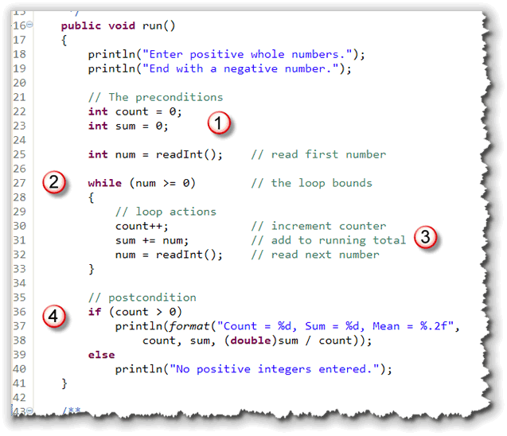
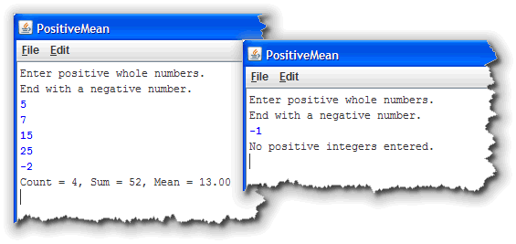

The
The for
loop makes
writing counted loops very easy because it puts the pieces
you need—a place to initialize your counter, a place to test
your counter, and a place to update your counter—all within
easy reach.
You can, however, do exactly the same thing with Java's
simpler, but more general-purpose while loop; that's
what your textbook does when it first explains how to use a loop
on page 228. In my mind, though, using a while loop
is just not quite as convenient.
The while Loop Syntax
The while loop, which you can see in the
illustration below, only has three parts:
- the keyword
while - a
booleantest - a loop body

To use the while statement to build
a counted loop, you must do three things:
- Create a counter variable, and initialize it before
the loop starts. This takes the place of the
initialization expression in the
forloop. - Test the counter variable inside the
whilecondition. - Update your counter at the end of the loop body.
This takes the place of the update expression in the
forloop.
Here's the basic skeleton for a counted loop, written
with while:
// A Counted Loop Skeleton with while
int counter = 0;
while ( counter < 10 )
{
// Loop body statements
// Update loop counter
counter++;
}
Caveats
There are three common errors that often occur when
writing counted loops using while. By learning what
they are, and then checking for each one when you write your
loops, you increase your chances of writing a correct loop the
first time.
Expired Counters
When using the for loop, you usually create
and initialize your counter variables inside the initialization
expression of the for loop. If you forget to do so,
the for loop condition usually looks "empty", which
acts as a reminder.
With the while loop, however, you must define
and initialize your counter outside the
while loop. This has several implications:
- In the
forloop, the scope of the counter variable is restricted to the body of the loop. That is not true for thewhileloop. - If you have several
whileloops, and each of them use the same counter variable name, then you cannot redeclare the variable for each new loop. All of your loops will use the same variable. - You must, however, remember to reinitialize
the counter before each loop, even though you can't
redefine it. Forgetting to do this often leads to
the case of the expired counter. If a counted
whileloop is preceded by another, and both use the same counter variable, you may forget to reinitialize the counter for the second loop. This doesn't create a syntax error, but it does give you the wrong answer.
There are two possible solutions to the expired counter problem.
- If you give all of your counters unique names, you won't run into the problem. Sometimes, however, this is hard to do. Thinking up a new name when you really want to use the common counter names like i, idx, or counter, can be difficult.
- A better solution is to train yourself to always
initialize your counter on the line immediately preceeding
the while condition. After a bit, a missing
initialization starts to look as "empty" as the missing
initialization section in a
forloop.
Endless Loops
The problem of endless loops is not unique to counted
while loops. You can create endless loops in a
variety of ways. Still, a counted while loop lends
itself to endless loops in a way that the others don't. Because the
while loop places the counter update expression at
the bottom of the loop—which may be far removed from the
while loop condition by the time all of the
intervening statements have been added—it is easy to forget it.
With the for loop, leaving out the update
expression creates an "empty" looking loop condition, but not
with the while loop.
The easiest solution to this problem is to use the loop-building strategy presented in the previous unit. If you start by first writing the "mechanics" of the loop—bounds, precondition, and update—you are less likely to get distracted by the "real" statements and forget to add the update expression at the end of the loop.
Phantom Semicolon
This last problem is also not restricted to while
loops; it affects selection statements and for
loops as well.
If you put a semicolon after the condition of a while
(or for) loop, the body of the loop becomes the
null statement. Here's an example:
while (cups < 10);
{
// Can NEVER get here if cups is < 10
}
Because of the semicolon, you are saying:
As long as cups is less than ten, do nothing.
This creates two problems:
- If
cupswas originally less than ten, you will have an endless loop. Because nothing in the null body changes the value ofcups, it will remain at its intial value. - If
cupswas greater-than or equal-to ten, you will not have an endless loop, but the statements that were intended to be executed as part of the loop body will be executed exactly once.
Where To Now?
After reading the preceding section, you might be
wondering why anyone would bother with while at all.
The for loop seems so much more capable.
That's true for counted loops; if you are going
to write loops that are controlled by a counter, you should
probably use the for loop. But, not all loops, or
even most loops, are counter-controlled. Event controlled loops
are much more common, and there, the while
loop reigns.
Indefinite Loops
In this section, you'll
learn how to write loops that monitor events, rather than loops
that use a simple counter to control their execution. To
accomplish this, you'll use the while loop
which you met at the beginning of this lesson.
Although the for loop is the undisputed champ
in the counted-loop arena, the while loop really comes
into its own when the loop test condition is a little less clear-cut.
Let's look at an example.
Here's a condensed fragment of code from an applet named
Indefinite.java that uses a simple "event-testing" loop
similar to the one shown here. Take a look at this loop, and see
if you can guess how many times it will execute.

In the Indefinite program, the character
variable, randomChar, is assigned a value between 0
and 127, calculated by using the Math.random()
method. In the loop that follows, randomChar
is tested, and, if it is not equal to the character 'Q',
then the loop body is entered, where the number of repetitions
is incremented and displayed.
After you've looked it over, run the applet by clicking the link in this sentence. When the applet appears, press its Start button, and see if you were right! When you press the button, the Indefinite applet will execute the loop as shown here.

Unless you have some kind of psychic powers, you can't know how many times the loop will run. That's why this kind of loop is called an indefinite loop. You can't tell by reading the source code how many repetitions it will make.
Even though this is not a counted loop, the body
of the loop must still contain code that advances the
loop's bound. If it does not, then, once entered, the loop will
repeat forever. In this example, we advance toward the loop's
bound by calculating a new random character for
randomChar.
Sentinel Bounds
This particular indefinte loop is an example of a sentinel loop. A sentinel loop is a loop that looks through its input for some special value to end the loop. The special value is called the sentinel. As mentioned earlier, sentinels are commonly used in two situations:
- When searching through text to find a character or word.
- When used as an "out-of-bounds" value that marks the end of input.
In this example, the sentinel is the letter 'Q', generated by the random number generator, and it is used to mark the end of valid input.
Another Sentinel Example
A sentinel doesn't necessarily have to be a single value, like
the letter "Q" in the example just shown; it may include a range of values.
When we wrote GradeCalculator in the last lesson, we had to
know ahead of time how many grades the teacher would enter, so
we could use the for loop. With the while
loop, though we can solve the problem like this, to allow
for any non-positive number to act as a sentinel to end the input:
Calculate a Positive Mean
Accept integer numbers from the user until a negative number is entered.
Display the sum, count and average of the numbers entered.
Rather than just reading ahead, see if you can apply what you learned in the lesson "Introducing Loops", to create a loop plan that meets these requirements.
Here are the questions you should ask yourself:
- What is the loop's bounds?
- What are the necessary bounds preconditions?
- What are the necessary actions to advance toward the bounds?
- What is the goal?
- What are the goal preconditions?
- What actions are necessary in the body to carry out the goal?
- What postcondition actions are necessary to carry out the goal?
When you're done, come on back here and we'll tackle it together.
A Solution
Let's look through the answers together:
1. What is the loop's bounds?
The loop's bound is that a negative number was entered. The Java loop condition should look like this:
while (num >= 0)
2. What are the bounds preconditions?
The only precondition is that num holds a
value. The value could come from reading a network stream,
could be entered from the keyboard, or could be generated by
a random number generator. The only hard-and-fast requirement
is that num must be initialized in such a way
that it is possible to either enter or to avoid the loop.
Here's some code that meets those requirements.
int num = readInt("Enter next number: ");
3. What advances the loop?
Inside the loop body, the value of num
must change. To do that, you
could generate another random number, input a value from the
network stream, or, as we've done here, read another number from the keyboard.
At this point, you should be able to test the mechanics of your loop, and make sure that it "works." Once the loop works, you can turn your attention to the loop's goal.
4. What is the goal?
The loop's goal is simple. It should display the count of the non-negative integers entered, the sum of the integers, and their average.
5. What are the goal preconditions?
To meet the goal, you must have a counter, and a variable that
can hold the sum. The counter should be an int, but
the sum can be an int or a double.
6. What actions advance the goal?
Each positive number should be added to the sum of the numbers. Then, the count should be incremented for each number entered.
7. What postconditions must be considered?
You must first check for a count of zero. If count is zero then no numbers were entered and you can't compute the average or sum.
If count is greater than zero, then compute and display the sum, average, and count of numbers entered.
The Solution in Code
Here's an application, PositiveMean.java, that follows this strategy to calculate the average of a sequence of numbers input from the keyboard. Click the hyperlink in the previous sentence if you want to download it and run it on your computer.

Notice that:
- The precondition section sets up both the
counter and accumulators, as well as reading in the initial
value from the user. Before you encounter the loop test,
you must make sure that the tested value (
numin this case) has a legitimate value. - Rather than checking a counter or looking for a single
value, the loop bounds is controlled by a more general Boolean
condition. The loop will continue while
numis greater than, or equal to 0. - Inside the loop body, the three loop operations take place: the current count is incremented, the current number is added to the running total, and the next number is generated to advance the loop. Remember, if we didn't read a new number, then we'd be stuck inside an endless loop!
- Finally, after the loop is finished, the count value is checked in the loop's postcondition to make sure it's "safe" to calculate the average.If no positive numbers were entered, an error message is displayed instead.
You can download and run the program on your own computer. Here are
two different runs on my machine:

Coming Up Next ...
In this lesson you learned how to use Java's while
loop to write both counted and sentinel loops. In the
next lesson you'll learn more about processing
indefinite loops.